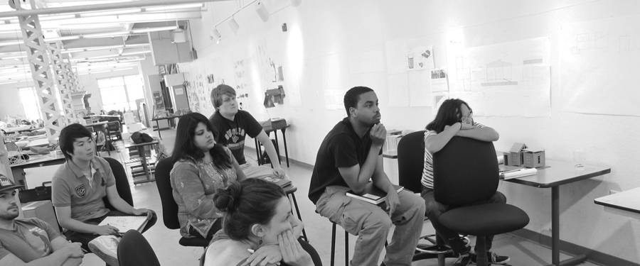
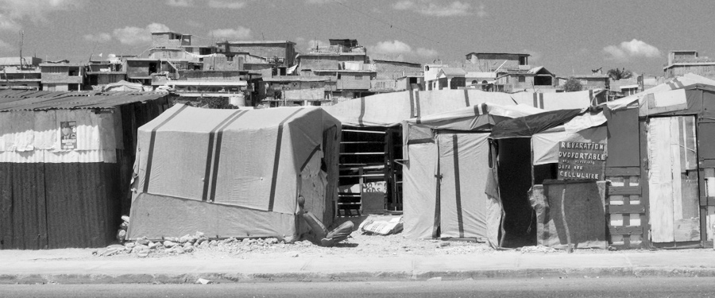
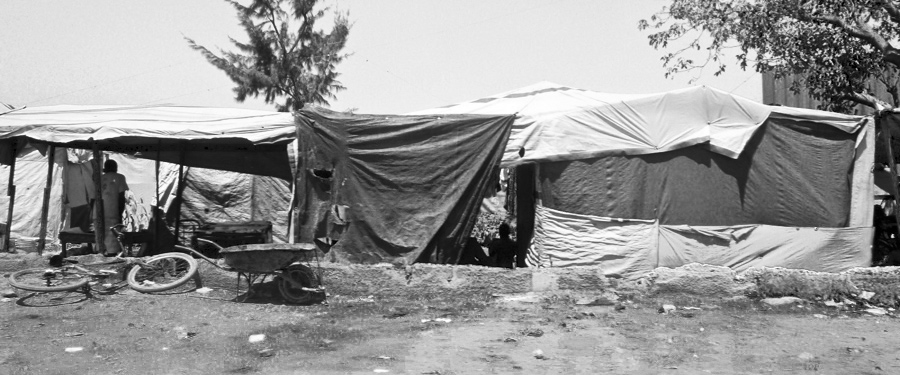
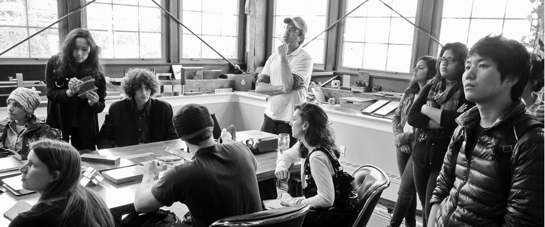
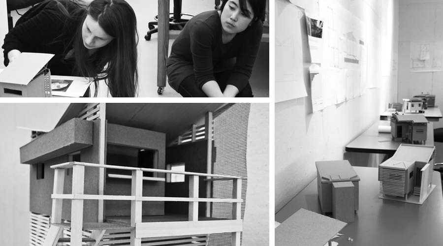

In the Spring of 2011 at the Maryland Institute College of Art (MICA), The Environmental Design Department’s Design|Build class began investigating methodologies used in disaster relief with the goal of designing and building a prototype for a better transitional shelter. Our project divided into two semesters – the Spring engaged research and design while the Fall will focus on the details and construction of a prototype.

Our group began by simply trying to understand the problem. While disasters seem to be escalating in both quantity and impact, the response to these disasters is still a broken process – functioning in a re-active mode rather than a pro-active mode. This methodology often adds time to the deployment of supplies, adds cost to the overall effort, and effectively causes many in need of aid to suffer, sometimes resulting in unnecessary deaths. We spent 8 weeks intensively researching the problems - with relief organizations, with distribution methodologies, with current systems and designs being employed - and we analyzed several case studies to support our findings.

Our research ended in early March at which time the class received grant money to support travel costs for further investigations in post-disaster Haiti – some 14 months after an earthquake took the lives of an estimated 230,000 people. Five of us traveled over our Spring Break to Port-au-Prince where we investigated issues on the ground to see what other people and organizations were proposing as the city had begun transitioning into a complete rebuilding mode. The trip allowed us to investigate various shelter construction projects going on in Haiti today, and to observe fi rst-hand the transition from emergency tents and tarpaulins, to temporary housing, into new permanent housing and communities. The trip proved invaluable in the weeks to come as we headed into design.

In design, we discovered that the issues are more complex than simply providing a new shelter option - seemingly a reactive response without any clear-cut considerations for the culture or the needs of the social condition. Every arena is different, with a new set of standards that should be considered… so our latest design concept revolves around the notion of assessment – understanding conditions prior to a disaster can provide an intimacy with the post-disaster situation that few shelter designers take into account.

Our principal design discussion continues to revolve around how to include such social considerations – health and wellness conditions, issues of rape and unwanted pregnancy, food and malnourishment, safety and security, privacy, work stimulation and job creation – and how solutions to those problems can somehow mesh with required architectural considerations such as energy consumption, passive design strategies and water collection systems. Is it possible for a transitional shelter to react to several needs instead of just one? We hope to build a shelter that can provide some portion of relief in multiple ways… a shelter that becomes a tool in the rehabilitation process helping to achieve order and balance in a way of life that made it through the trial of disaster.
